Facultad de Ingeniería de Sistemas Computacionales
Lic. en Desarrollo y Gestión de Software
Tópicos Especiales II
Laboratorio 6 — Flujo RAG básico con embeddings
1GS241
Presentado por:
Ríos, Gerald (8-987-741)
Revisado por:
Profesor Regis Rivera
Fecha de entrega
30 / 10 / 2026
Índice
Introducción3
1. Preparación3
1.1 Versiones y modelos3
1.2 Documentos y programa4
2. Ejecución del flujo RAG5
2.1 Pregunta con respuesta (paso 20)5
2.2 Pregunta que necesita otro documento (paso 21)5
2.3 Pregunta sin evidencia (paso 22)6
3. Comparación con y sin RAG (paso 23)7
4. Modificación de un documento (paso 24)9
5. Tamaño de chunk (paso 25)11
6. Top-k (paso 26)15
7. Reto final (paso 27)17
7.1 Pregunta fácil18
7.2 Pregunta que necesita dos documentos18
7.3 Pregunta sin respuesta20
8. Preguntas de reflexión21
8.1 ¿Cuál es la diferencia entre RAG y entrenar o hacer fine-tuning a un modelo?21
8.2 ¿Para qué sirven los embeddings dentro de este laboratorio?22
8.3 ¿Qué problema puede ocurrir si los chunks son demasiado pequeños?22
8.4 ¿Qué problema puede ocurrir si Top-k recupera demasiados fragmentos?22
8.5 ¿Por qué sigue siendo posible una alucinación, aunque se utilice RAG?22
8.6 ¿Qué cambiaría para utilizar miles o millones de chunks en lugar de unos pocos?22
Conclusiones23
Anexo. Código completo de rag_universidad.py24
Introducción
Este laboratorio armó, paso a paso, un sistema de preguntas y respuestas sobre documentos de una universidad. Todo corre en el equipo: Ollama sirve el modelo de embeddings nomic-embed-text y el modelo generativo qwen2.5:3b, y el programa en Python solo usa requests y numpy. Los documentos se parten en fragmentos, cada fragmento se convierte en un vector, la pregunta se compara contra esos vectores y los fragmentos más parecidos se le entregan al modelo como contexto.
Corrimos de verdad cada paso del 20 al 27 y guardamos la salida completa, con el comando y la hora, en la carpeta evidencia del proyecto. Las figuras del informe son esas mismas salidas dibujadas como terminal; no retocamos ninguna. Cuando el modelo respondió mal, lo dejamos escrito tal cual, porque dice más sobre RAG que las respuestas correctas.
El informe sigue el orden del enunciado, compara una misma pregunta con y sin documentos, mide el efecto del tamaño de chunk y del valor Top-k con corridas reales, contesta las seis preguntas de reflexión y cierra con las conclusiones. El código completo está al final, como anexo.
1. Preparación
1.1 Versiones y modelos
Los pasos 1, 2 y 7 no requirieron instalar nada. Python, Ollama, los dos modelos y las dos librerías ya estaban en el equipo, así que no corrimos ollama pull ni pip install y documentamos el estado con ollama list y pip show. El ejecutable de Ollama no está en el PATH de esta sesión; lo llamamos con su ruta completa, C:\Users\HOME\AppData\Local\Programs\Ollama\ollama.exe. La lista de modelos muestra también qwen3:4b y qwen2.5-coder:3b, que pertenecen a otros laboratorios y no se usaron aquí.
Tabla 1. Componentes verificados
Componente
Resultado
Python
3.13.5
Ollama
0.40.13, servidor en http://localhost:11434
Modelo de embeddings
nomic-embed-text:latest (274 MB)
Modelo generativo
qwen2.5:3b (1.9 GB)
requests / numpy
2.33.1 / 2.4.4
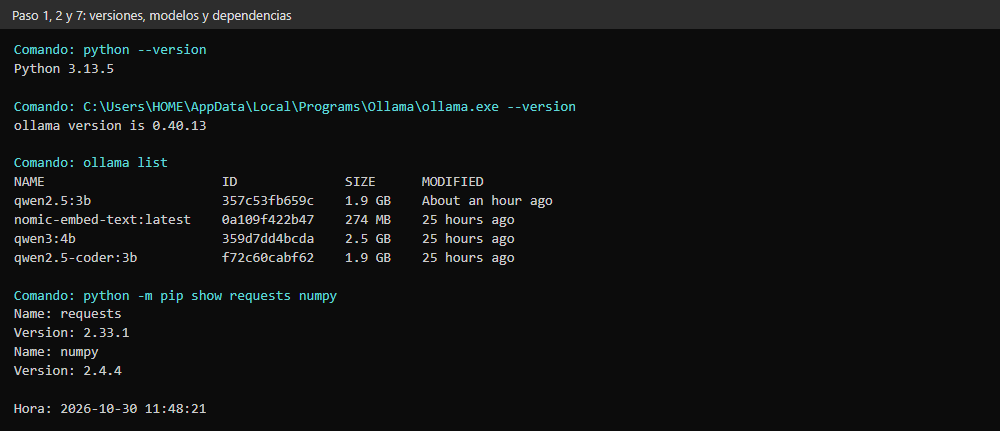
Figura 1. Salida de los pasos 1, 2 y 7: versiones, modelos disponibles y librerías instaladas.
1.2 Documentos y programa
Creamos la carpeta laboratorio_rag con la subcarpeta documentos y los tres textos del enunciado, copiados sin cambiar una coma: reglamento.txt, servicios.txt y laboratorios.txt. Después escribimos rag_universidad.py con las funciones de los pasos 8 al 19. La única corrección fue de forma: el PDF del enunciado parte en tres líneas el print de mostrar_recuperados, y lo dejamos en una sola línea para que corra.
El programa pide la pregunta con input() dentro de un bucle. Para dejar evidencia reproducible lo alimentamos por la entrada estándar con la pregunta y luego la palabra salir, y lo ejecutamos con python -u para que la salida no quede retenida en un búfer. Para los pasos 25 y 26 escribimos aparte experimentos.py, que importa las funciones de rag_universidad.py y recibe como argumentos el tamaño de chunk y el valor de k; así el programa principal queda idéntico al del enunciado y no lo editamos a mano tres veces.
2. Ejecución del flujo RAG
Con los tres documentos y los valores por defecto (chunks de 220 caracteres, solapamiento de 40 y k=3), el programa cargó 3 documentos y creó 6 chunks. Cada corrida de punto a punto, con indexado, recuperación y generación, tomó entre 20 y 35 segundos en CPU.
2.1 Pregunta con respuesta (paso 20)
Preguntamos «¿Cuántos libros puedo retirar de la biblioteca y por cuántos días?». El primer chunk recuperado fue servicios.txt con similitud 0.709 y contenía el documento completo, incluida la frase del préstamo. Los otros dos fueron reglamento.txt (0.586) y otro fragmento de servicios.txt (0.550), este último cortado en «imo de 14 días.». El modelo contestó que se pueden retirar hasta 5 libros por un máximo de 14 días y citó servicios.txt, que es la fuente correcta. El fragmento del reglamento no aportaba nada, pero tampoco confundió al modelo.
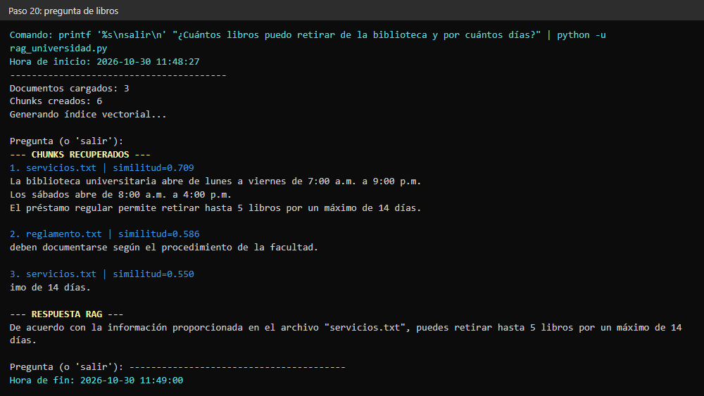
Figura 2. Paso 20: chunks recuperados y respuesta RAG para la pregunta de los libros.
2.2 Pregunta que necesita otro documento (paso 21)
Para «¿Qué necesito para instalar software adicional en los laboratorios?» el sistema recuperó dos chunks de laboratorios.txt (0.804 y 0.689) y uno de reglamento.txt (0.615). La respuesta fue correcta, se necesita autorización del responsable del laboratorio, pero el modelo añadió que ese requisito aparece «tanto en laboratorios.txt como en reglamento.txt». Eso es falso: el reglamento habla de asistencia. El chunk irrelevante entró al contexto y el modelo lo citó como fuente. Este es el primer indicio del costo de recuperar de más, y lo retomamos en el paso 26.
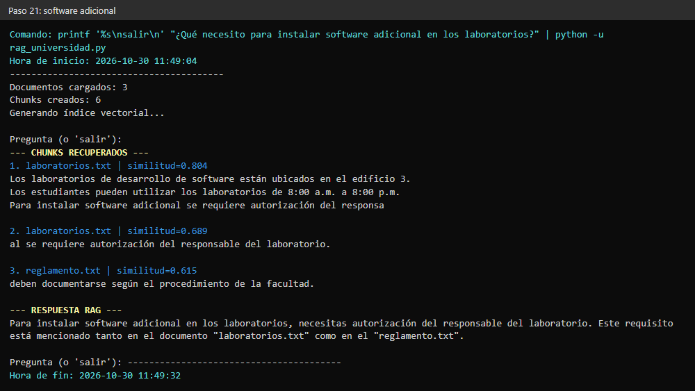
Figura 3. Paso 21: chunks recuperados y respuesta; la segunda fuente citada no respalda la respuesta.
2.3 Pregunta sin evidencia (paso 22)
Con «¿Cuál es el costo de la matrícula del próximo semestre?» el sistema recuperó igual tres chunks, porque la recuperación siempre devuelve los k más parecidos aunque ninguno sirva: reglamento.txt (0.553 y 0.537) y servicios.txt (0.513). La respuesta fue exactamente la frase pedida, «No encuentro esa información en los documentos proporcionados.». En esta corrida el modelo obedeció la instrucción del prompt. No siempre ocurre, como veremos en el reto.
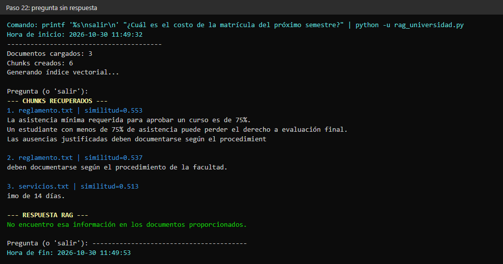
Figura 4. Paso 22: pregunta sin evidencia; el modelo responde con la frase indicada.
3. Comparación con y sin RAG (paso 23)
Hicimos la misma pregunta de la matrícula directamente al modelo con ollama run qwen2.5:3b, sin documentos. La respuesta fue fluida y bien escrita en español, aunque con un descuido («dependiendo del país, el país, la institución»): dijo que no puede dar costos específicos y recomendó contactar a la universidad. Es decir, en esta pregunta el modelo no inventó un monto. Lo esperado era que adivinara y no lo hizo, así que no podemos afirmar que «siempre alucina» sin RAG.
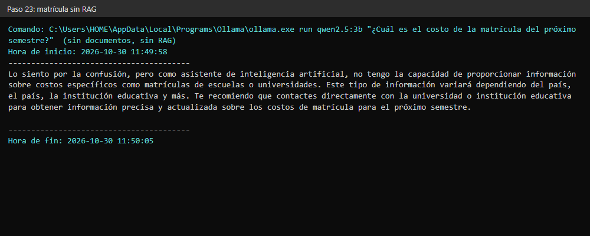
Figura 5. Paso 23: la pregunta de la matrícula sin RAG.
Para ver el comportamiento que el enunciado pide observar, repetimos la comparación con la pregunta de los libros, donde sí existe un dato real en los documentos (5 libros por 14 días). Corrimos dos veces el modelo sin contexto y salió algo distinto cada vez: en la primera dijo que en la mayoría de las bibliotecas se pueden sacar «entre 1 y 3 libros» por «1 a 4 semanas», y en la segunda que se pueden retener «entre 1 a 2 libros por cada día de alquiler». Ninguna coincide con el documento de la institución y la segunda ni siquiera tiene sentido, pero las dos suenan como respuestas normales.
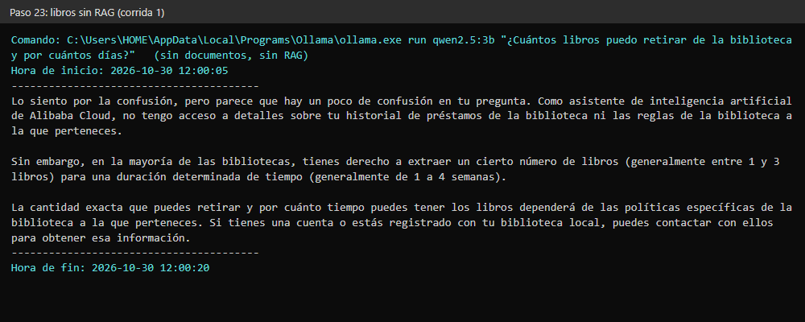
Figura 6. Paso 23: pregunta de los libros sin RAG, primera corrida.
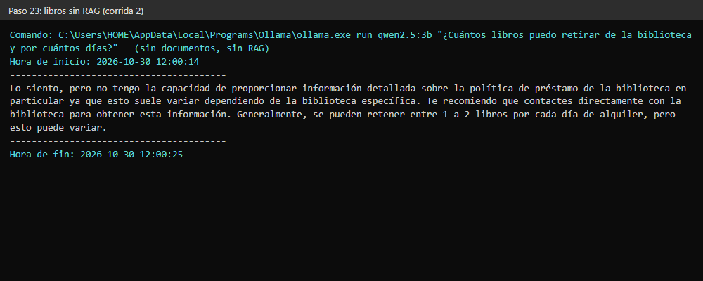
Figura 7. Paso 23: pregunta de los libros sin RAG, segunda corrida.
Tabla 2. Misma pregunta con y sin RAG
Pregunta
Sin RAG
Con RAG (k=3, chunk 220)
Matrícula del próximo semestre
Se niega a dar un monto y sugiere consultar a la universidad.
«No encuentro esa información en los documentos proporcionados.»
Libros y días de préstamo
Dos respuestas distintas, ninguna correcta: «1 a 3 libros» y «1 a 2 libros por día».
5 libros por 14 días, fuente servicios.txt.
Lo que se desprende de las corridas es que la fluidez no demuestra respaldo. El modelo escribe con la misma seguridad cuando acierta, cuando generaliza («en la mayoría de las bibliotecas») y cuando dice algo sin sentido. Solo la versión con RAG se puede auditar, porque deja a la vista los chunks y la fuente, y el lector puede comprobar si la frase existe en el documento. Un detalle que sí nos llamó la atención es que sin documentos el modelo se presenta como asistente de Alibaba Cloud y habla de «tu biblioteca» como si fuera genérica; no tiene forma de saber cuál es la nuestra.
Un incidente de la sesión: al repetir las corridas sin RAG desde el script, el proceso de ollama run se quedó esperando indefinidamente. Ocurre cuando la entrada estándar no es una terminal, porque el comando la lee y la agrega al prompt. Lo resolvimos cerrando la entrada estándar y poniendo un tiempo máximo a la llamada. Las respuestas de este informe salieron de las corridas completas, no de las interrumpidas.
4. Modificación de un documento (paso 24)
Antes de tocar nada hicimos la pregunta «¿Cuál es el horario de la biblioteca de lunes a viernes y los sábados?» con el servicios.txt original, y guardamos una copia del original como evidencia. El sistema respondió de lunes a viernes de 7:00 a.m. a 9:00 p.m. y sábados de 8:00 a.m. a 4:00 p.m. (similitud 0.731).
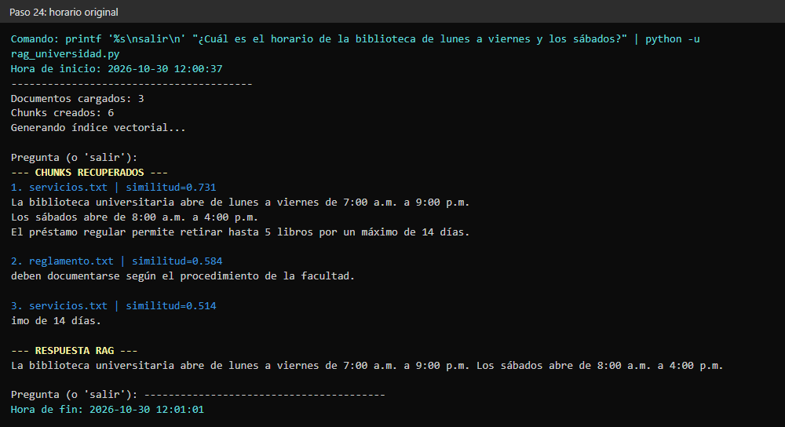
Figura 8. Paso 24: horario de la biblioteca con el documento original.
Después cambiamos el archivo a lunes a viernes de 8:00 a.m. a 6:00 p.m. y sábados de 9:00 a.m. a 1:00 p.m., cerramos el programa y lo volvimos a ejecutar. La respuesta reflejó los horarios nuevos y citó servicios.txt (similitud 0.729). Ningún modelo se reentrenó ni se tocó: lo único que cambió fue el texto y, al reiniciar, el índice vectorial se generó otra vez. Esa es la ventaja práctica de RAG para información que cambia, como horarios, tarifas o reglamentos. Después de la prueba restauramos servicios.txt al original, que es el que se usó en los pasos 25 y 26; la copia modificada queda en la carpeta de evidencia.
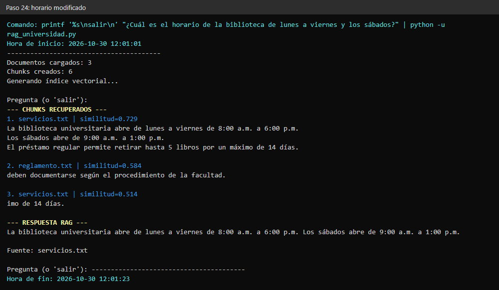
Figura 9. Paso 24: misma pregunta con el documento modificado.
5. Tamaño de chunk (paso 25)
Probamos 120, 220 y 400 caracteres, siempre con solapamiento de 40 y k=3, con dos preguntas: la de los libros y la del software. Los datos de 220 son los de los pasos 20 y 21.
Tabla 3. Efecto del tamaño de chunk (k=3)
Chunk
Chunks totales
Libros: chunks recuperados (similitud)
Software: chunks recuperados (similitud)
Respuestas
120
9
3 de servicios.txt (0.672, 0.663, 0.654); los dos primeros traen el dato completo y el tercero solo el horario
3 de laboratorios.txt (0.839, 0.809, 0.758)
Ambas correctas; la de software añadió una generalización que no está en el texto («cualquier otro tipo de software en cualquier laboratorio»)
Ambas correctas; la de software, breve y sin citar fuente
Con 120 caracteres los documentos de tres líneas se rompen en pedazos de una línea y media. En la pregunta del software el primer chunk quedó cortado en «se requiere autor» y otro empezó en «lar software adicional se requiere autorización…». La información completa solo se reconstruye porque el solapamiento repite parte del texto. Con 400, cada documento cabe en un único chunk, así que recuperar un documento es recuperar el documento entero; el costo es que, con k=3, el contexto incluye los tres documentos de la base, y dos de ellos no tienen que ver con la pregunta.
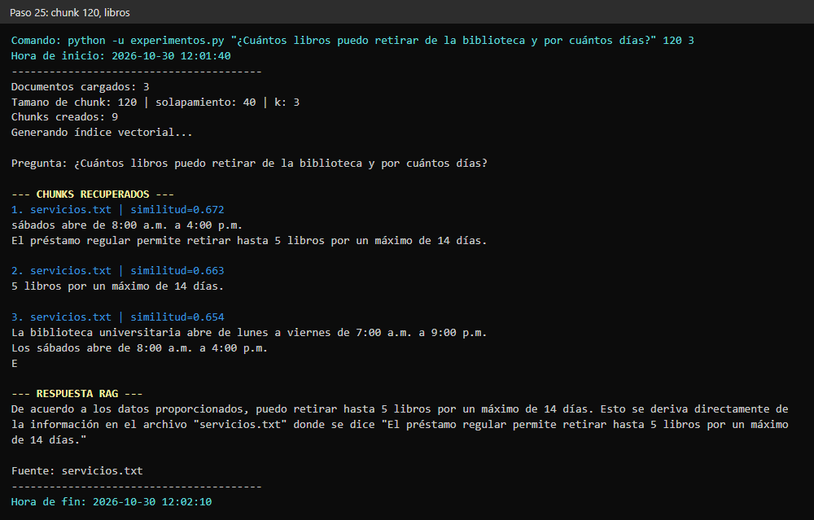
Figura 10. Paso 25: chunk de 120 caracteres, pregunta de los libros.
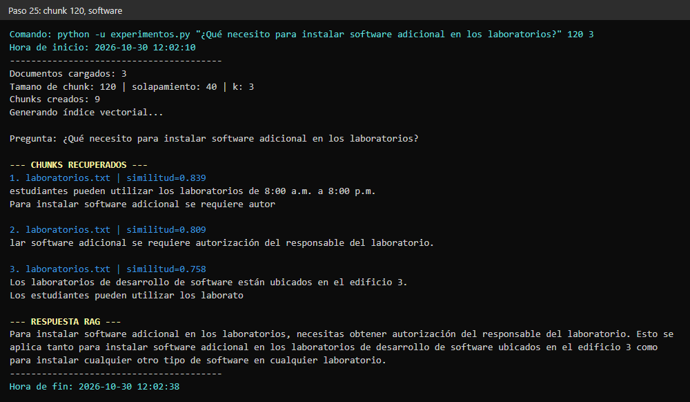
Figura 11. Paso 25: chunk de 120 caracteres, pregunta del software.
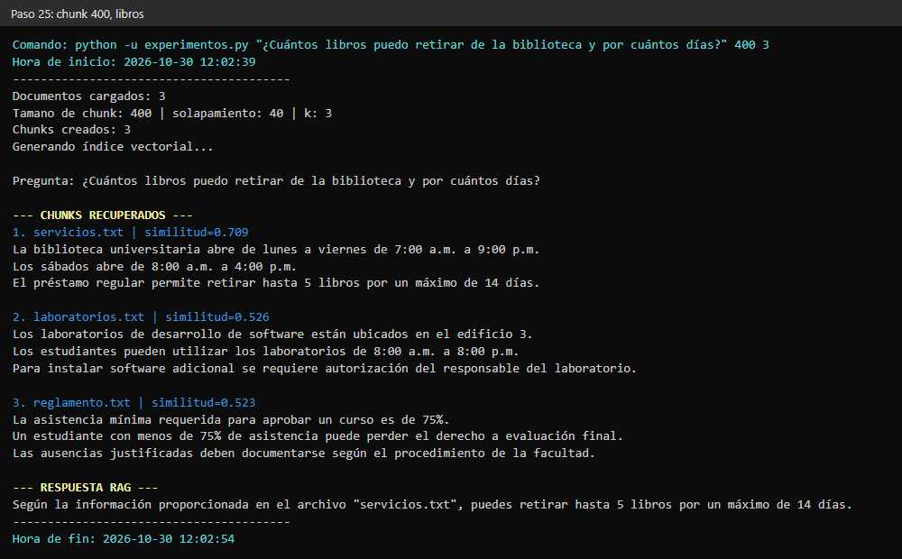
Figura 12. Paso 25: chunk de 400 caracteres, pregunta de los libros.
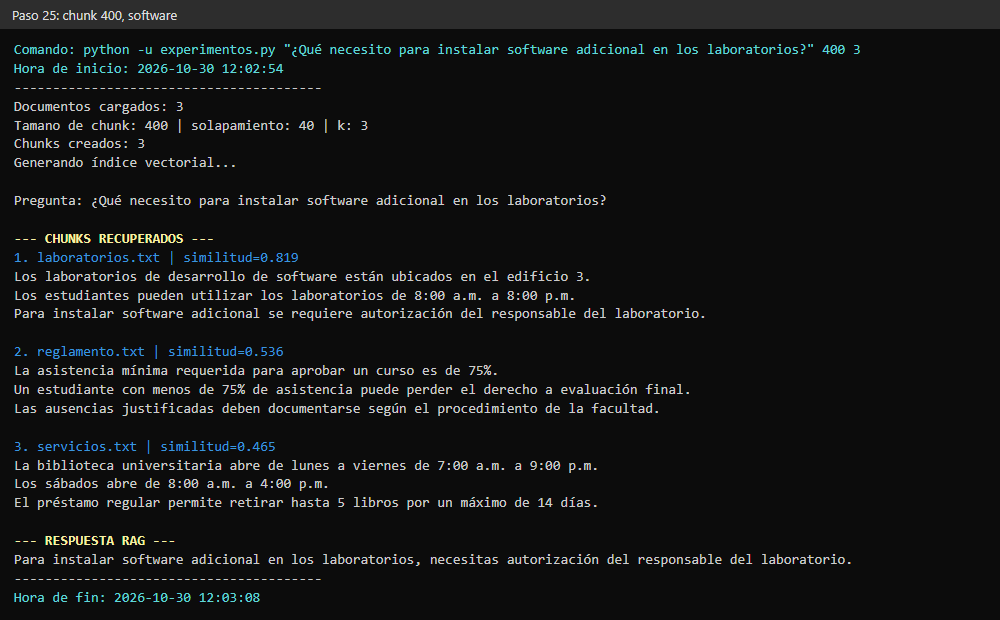
Figura 13. Paso 25: chunk de 400 caracteres, pregunta del software.
En respuestas correctas no hubo diferencia entre los tres tamaños: con documentos tan cortos el modelo acertó siempre el dato. La diferencia estuvo en la calidad del contexto. Con 120 los chunks eran más específicos (todos de la fuente correcta), pero cortados y repetidos. Con 220 aparecieron fragmentos sueltos como «imo de 14 días.», sin sentido por sí solos. Con 400 el contexto fue legible pero poco selectivo. No medimos una mejora de la respuesta con ningún tamaño; lo que cambió fue cuánta basura entraba al prompt. Con una base de solo tres documentos no podemos asegurar cuál tamaño es mejor en general.
6. Top-k (paso 26)
Fijamos el chunk en 220 y probamos k=1, k=3 y k=5 con las mismas dos preguntas. Con 6 chunks en el índice, k=5 equivale a pasarle al modelo casi toda la base.
Tabla 4. Efecto del valor de k (chunk 220)
k
Libros
Software
1
1 chunk relevante (servicios.txt, 0.709). Respuesta correcta, sin nombrar la fuente.
1 chunk relevante (laboratorios.txt, 0.804), con el final cortado en «responsa». Respuesta correcta y fuente correcta.
2 relevantes y 1 irrelevante (reglamento.txt, 0.615). Correcta, pero cita el reglamento sin motivo.
5
2 relevantes (los dos de servicios.txt) y 3 irrelevantes. Correcta, fuente correcta.
2 relevantes y 3 irrelevantes (dos de reglamento.txt y uno de servicios.txt, 0.465). Correcta, sin fuente.
Con k=1 el contexto fue limpio y la respuesta, correcta en ambas preguntas. El riesgo es que, si el dato hubiera quedado repartido entre dos chunks, el modelo solo vería uno; en la pregunta del software el chunk único ya venía cortado a mitad de palabra y la respuesta salió bien porque la frase la repetía el propio contexto. Con k=5 la similitud del último chunk bajó a 0.522 y 0.465, y el prompt se llenó de texto sobre asistencia, horarios de biblioteca y ubicación de laboratorios. Ninguna respuesta dejó de ser correcta, pero en k=3 ya vimos una cita errónea provocada por un fragmento que no venía al caso.
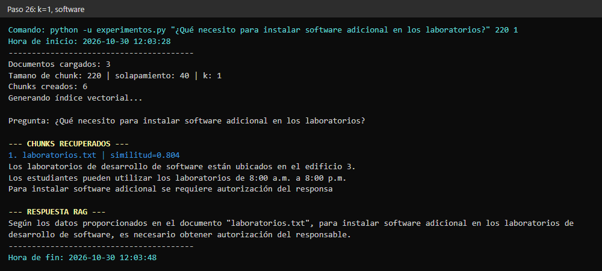
Figura 14. Paso 26: k=1, pregunta del software.
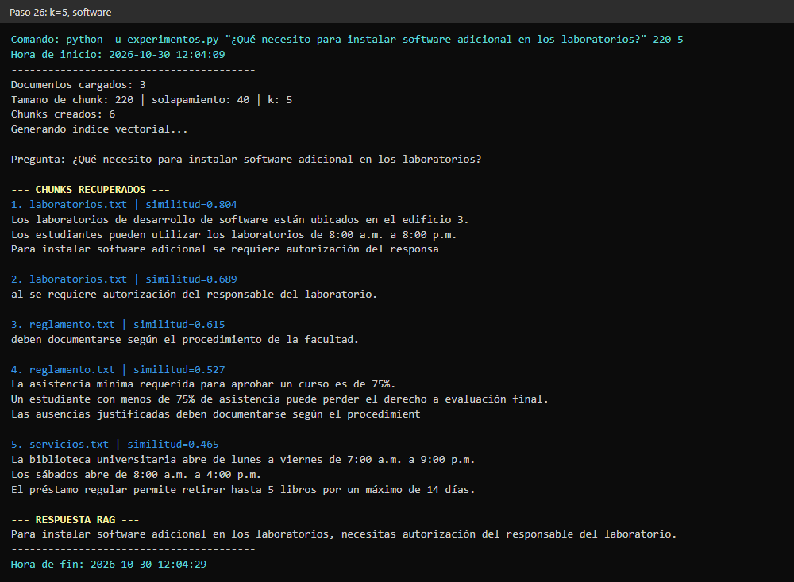
Figura 15. Paso 26: k=5, pregunta del software.
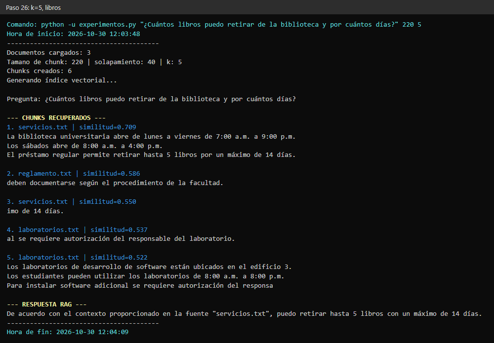
Figura 16. Paso 26: k=5, pregunta de los libros.
7. Reto final (paso 27)
El enunciado pide dos documentos nuevos sobre un tema elegido por nosotros. Escribimos nosotros mismos sala_estudio.txt y comedor.txt, sobre las normas de una sala de estudio y de un comedor estudiantil. Son textos de ejemplo para el laboratorio, no reglamentos reales de la UTP ni de ninguna otra institución. Con ellos la carpeta documentos llegó a cinco archivos .txt.
sala_estudio.txt
La sala de estudio del edificio 3 abre de lunes a viernes de 9:00 a.m. a 7:00 p.m.
Cada estudiante puede reservar un cubículo por un máximo de 2 horas al día.
No se permite consumir alimentos dentro de la sala; solo se permite agua en envases cerrados.
comedor.txt
El comedor estudiantil atiende de lunes a viernes de 11:00 a.m. a 2:00 p.m.
Para comprar el almuerzo se debe presentar el carné de estudiante.
Los estudiantes pueden comer en el comedor o en las mesas del patio, pero no dentro de las aulas.
7.1 Pregunta fácil
«¿Cuántas horas al día puedo reservar un cubículo en la sala de estudio?». El primer chunk fue sala_estudio.txt (0.789), seguido de dos irrelevantes (0.656 y 0.646). La respuesta fue correcta, 2 horas al día, pero con una forma que no esperábamos de un modelo con instrucciones en español neutro: «Podés reservar…», voseo, y una explicación redundante que repite lo mismo. El dato estaba bien; el estilo no es el que usaríamos y lo dejamos como salió.
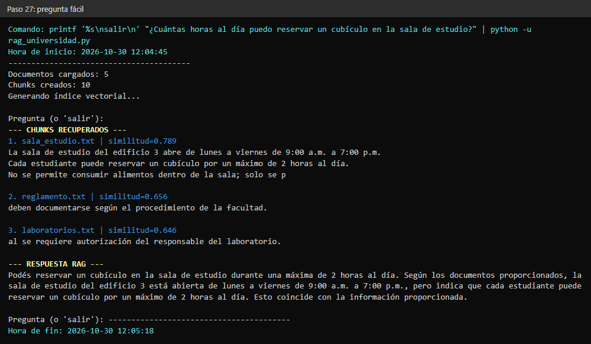
Figura 17. Paso 27: pregunta fácil.
7.2 Pregunta que necesita dos documentos
«Si quiero comer, ¿puedo hacerlo en la sala de estudio y hasta qué hora atiende el comedor?». La recuperación funcionó: comedor.txt (0.721) y sala_estudio.txt (0.641) quedaron en primer y segundo lugar, más un fragmento del reglamento (0.629). Aun así, el modelo respondió «No encuentro esa información en los documentos proporcionados.», un falso negativo, porque la información sí estaba en los dos primeros chunks. Repetimos la corrida y salió igual; repetimos con k=5 y salió igual otra vez. Las tres respuestas están en la carpeta de evidencia.
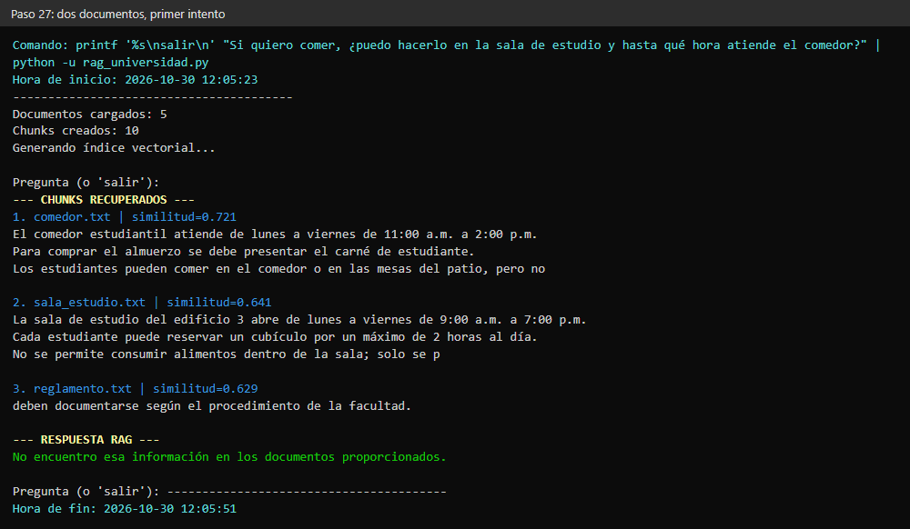
Figura 18. Paso 27: pregunta de dos documentos, primer intento. Se recuperaron los dos documentos correctos y el modelo contestó que no encontraba la información.
Probamos una pregunta de dos documentos redactada de forma más directa, «¿A qué hora cierra la sala de estudio y a qué hora abre el comedor?». Esa vez el modelo combinó bien ambas fuentes: la sala abre de 9:00 a.m. a 7:00 p.m. (fuente sala_estudio.txt) y el comedor atiende de 11:00 a.m. a 2:00 p.m. (fuente comedor.txt), y concluyó que la sala cierra a las 7:00 p.m. y el comedor abre a las 11:00 a.m. Mantenemos las dos preguntas en el informe: la que falló y la que funcionó, porque la diferencia entre ambas no está en la recuperación sino en cómo el modelo de 3 mil millones de parámetros razona sobre una pregunta compuesta («puedo comer» más «hasta qué hora») a partir de contexto fragmentado.
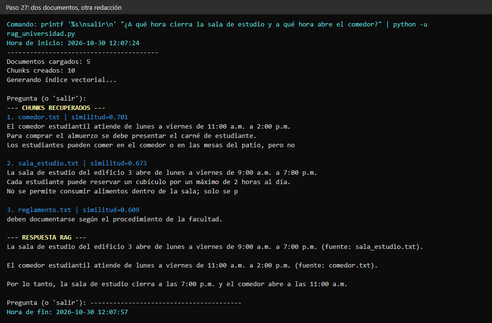
Figura 19. Paso 27: otra redacción de la pregunta de dos documentos; respuesta correcta con las dos fuentes.
7.3 Pregunta sin respuesta
«¿Cuánto cuesta el estacionamiento del campus?». El sistema recuperó reglamento.txt (0.657), laboratorios.txt (0.643) y sala_estudio.txt (0.626) y respondió con la frase exacta de «No encuentro esa información…». Cabe notar que la similitud del primer chunk, 0.657, es más alta que la de varios chunks útiles de la pregunta anterior (0.629). Esto indica que la similitud no sirve por sí sola como umbral para decidir si hay respuesta: quien tomó la decisión correcta fue el modelo, no el recuperador.
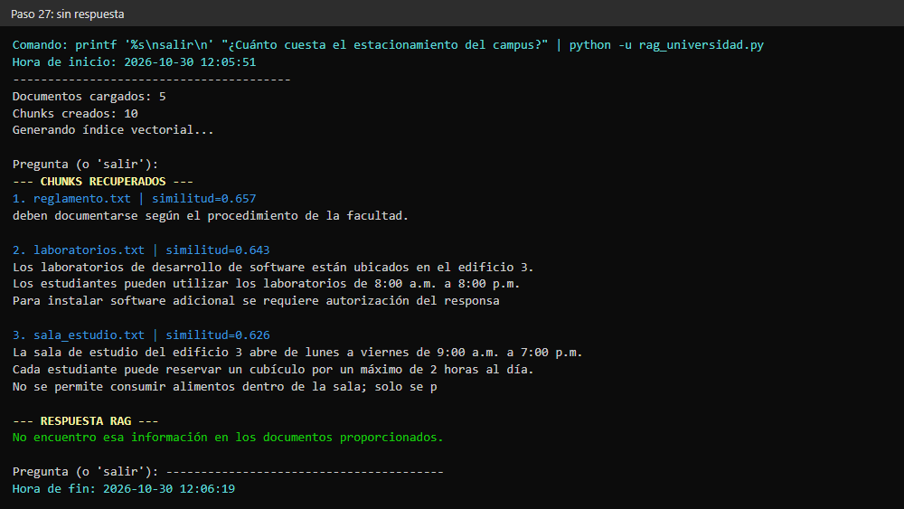
Figura 20. Paso 27: pregunta sin respuesta en la base de conocimiento.
Tabla 5. Resumen de las corridas del reto
Pregunta
Mejor chunk
Resultado
Fácil (cubículo)
sala_estudio.txt 0.789
Correcta, con voseo
Dos documentos, primera redacción (3 intentos)
comedor.txt 0.721 y sala_estudio.txt 0.641
Falso negativo las tres veces
Dos documentos, otra redacción
comedor.txt 0.701 y sala_estudio.txt 0.673
Correcta, con las dos fuentes
Sin respuesta (estacionamiento)
reglamento.txt 0.657
Frase exacta de «No encuentro…»
8. Preguntas de reflexión
8.1 ¿Cuál es la diferencia entre RAG y entrenar o hacer fine-tuning a un modelo?
El fine-tuning cambia los pesos del modelo con ejemplos adicionales; RAG deja el modelo igual y le pone el texto relevante en el prompt en el momento de la pregunta. En el paso 24 cambiamos un horario y la respuesta cambió al reiniciar, sin entrenar nada. Con fine-tuning, esa modificación habría exigido volver a entrenar. El fine-tuning sirve más para ajustar el estilo o la tarea del modelo; RAG, para que consulte datos que cambian y de los que se necesita citar la fuente.
8.2 ¿Para qué sirven los embeddings dentro de este laboratorio?
Convierten cada chunk y cada pregunta en un vector, de modo que se pueda medir qué tan parecidos son por significado y no solo por palabras repetidas. La similitud coseno entre el vector de la pregunta y el de cada chunk es lo que ordena los resultados del Top-k. Por eso la pregunta de los libros encontró el préstamo aunque no repite el texto literal del documento. Los embeddings no responden nada; solo deciden qué texto se le muestra al modelo generativo.
8.3 ¿Qué problema puede ocurrir si los chunks son demasiado pequeños?
Las ideas quedan partidas y cada fragmento pierde sentido. Con 120 caracteres vimos chunks como «lar software adicional se requiere autorización del responsable del laboratorio.», que empiezan en mitad de palabra, y la frase completa solo se recuperaba porque el solapamiento la repetía. Además, un dato que cruza el límite entre dos chunks puede quedar fuera del Top-k, y el modelo contestaría con información incompleta o diría que no la encuentra.
8.4 ¿Qué problema puede ocurrir si Top-k recupera demasiados fragmentos?
Entra contexto irrelevante y el modelo puede apoyarse en él. En el paso 21, con k=3, el modelo citó reglamento.txt como fuente de un requisito que ese documento no contiene. Con k=5 el prompt incluyó tres chunks sin relación con la pregunta en ambas pruebas. Además, el prompt crece, la generación se hace más lenta y, en modelos pequeños, aumenta la probabilidad de mezclar datos de fragmentos distintos.
8.5 ¿Por qué sigue siendo posible una alucinación, aunque se utilice RAG?
Porque el modelo sigue generando texto y la instrucción de usar «únicamente el contexto» es una petición, no una restricción. Nos pasó de tres formas distintas: citó una fuente que no respaldaba la respuesta (paso 21), añadió una generalización que no estaba en los documentos («cualquier otro tipo de software en cualquier laboratorio», chunk de 120) y, en el sentido contrario, negó una información que sí estaba en el contexto (pregunta de dos documentos). Además, la recuperación puede traer fragmentos equivocados y el modelo los usará con la misma seguridad.
8.6 ¿Qué cambiaría para utilizar miles o millones de chunks en lugar de unos pocos?
El índice actual es una lista en memoria y la recuperación compara la pregunta con todos los vectores, uno por uno. Con millones de chunks eso es demasiado lento, y generar los embeddings al iniciar el programa, como hace indexar, tampoco es viable. Habría que guardar los vectores en disco o en una base vectorial con un índice de búsqueda aproximada, calcular los embeddings una sola vez y actualizarlos solo cuando un documento cambia, y cortar los textos por estructura (párrafos o secciones) en lugar de por cantidad fija de caracteres. También haría falta filtrar por metadatos y revisar la calidad de la recuperación con un conjunto de preguntas de prueba, porque con tantos chunks aumentan los fragmentos parecidos pero equivocados.
Conclusiones
El flujo RAG funcionó de punta a punta con modelos locales: en las dos preguntas con evidencia el sistema recuperó el documento correcto como primer resultado y respondió con el dato exacto, y en la pregunta sin evidencia respondió con la frase indicada. También cambió su respuesta al modificar un documento, sin tocar el modelo. Sin RAG, el mismo modelo dio cifras distintas e incorrectas para el préstamo de libros en dos corridas seguidas, aunque en la pregunta de la matrícula no inventó un monto, así que no podemos decir que sin documentos siempre adivine.
Sobre el tamaño de chunk, con documentos de tres líneas las respuestas correctas no cambiaron entre 120, 220 y 400 caracteres. Lo que cambió fue el contexto: los chunks de 120 quedaron cortados y los de 400 trajeron documentos enteros sin relación. Sobre Top-k, k=1 dio contexto limpio y respuestas correctas, k=3 produjo una cita errónea y con k=5 más de la mitad de los chunks no tenían que ver con la pregunta. Con una base tan pequeña no podemos decir cuál valor es el mejor en general; para esta base, k=3 con chunk de 220 funcionó, pero no fue el más limpio.
Lo que quedó a medias o salió mal también cuenta. El modelo de 3 mil millones de parámetros dio un falso negativo tres veces seguidas en una pregunta que necesitaba dos documentos, y una de sus respuestas salió con voseo. La similitud tampoco separa preguntas con y sin respuesta. Para un sistema real haría falta revisar las respuestas contra las fuentes, usar un modelo más grande o un prompt más estricto, y no depender del modelo para decidir cuándo no hay información.
Anexo. Código completo de rag_universidad.py
import os
import requests
import numpy as np
OLLAMA_URL = "http://localhost:11434"
MODELO_EMBEDDING = "nomic-embed-text"
MODELO_LLM = "qwen2.5:3b"
CARPETA_DOCUMENTOS = "documentos"
def cargar_documentos(carpeta):
documentos = []
for nombre in os.listdir(carpeta):
if nombre.endswith(".txt"):
ruta = os.path.join(carpeta, nombre)
with open(ruta, "r", encoding="utf-8") as f:
documentos.append({
"fuente": nombre,
"texto": f.read()
})
return documentos
def crear_chunks(documentos, tamano=220, solapamiento=40):
chunks = []
for doc in documentos:
texto = doc["texto"].strip()
inicio = 0
while inicio < len(texto):
fin = inicio + tamano
fragmento = texto[inicio:fin].strip()
if fragmento:
chunks.append({
"fuente": doc["fuente"],
"texto": fragmento
})
inicio += tamano - solapamiento
return chunks
def embedding(texto):
respuesta = requests.post(
f"{OLLAMA_URL}/api/embed",
json={"model": MODELO_EMBEDDING, "input": texto},
timeout=120
)
respuesta.raise_for_status()
return np.array(respuesta.json()["embeddings"][0], dtype=float)
def similitud_coseno(a, b):
denominador = np.linalg.norm(a) * np.linalg.norm(b)
if denominador == 0:
return 0.0
return float(np.dot(a, b) / denominador)
def indexar(chunks):
indice = []
for chunk in chunks:
indice.append({
"fuente": chunk["fuente"],
"texto": chunk["texto"],
"vector": embedding(chunk["texto"])
})
return indice
def recuperar(pregunta, indice, k=3):
vector_pregunta = embedding(pregunta)
resultados = []
for item in indice:
score = similitud_coseno(vector_pregunta, item["vector"])
resultados.append({**item, "score": score})
resultados.sort(key=lambda x: x["score"], reverse=True)
return resultados[:k]
def mostrar_recuperados(resultados):
print("\n--- CHUNKS RECUPERADOS ---")
for i, item in enumerate(resultados, 1):
print(f"{i}. {item['fuente']} | similitud={item['score']:.3f}")
print(item["texto"])
print()
def construir_prompt(pregunta, resultados):
contexto = "\n\n".join(
f"Fuente: {r['fuente']}\n{r['texto']}"
for r in resultados
)
return f"""
Responde únicamente usando el CONTEXTO proporcionado.
Si el contexto no contiene información suficiente para responder, indica exactamente:
"No encuentro esa información en los documentos proporcionados."
Incluye al final las fuentes utilizadas.
CONTEXTO:
{contexto}
PREGUNTA:
{pregunta}
"""
def generar_respuesta(prompt):
respuesta = requests.post(
f"{OLLAMA_URL}/api/generate",
json={
"model": MODELO_LLM,
"prompt": prompt,
"stream": False
},
timeout=180
)
respuesta.raise_for_status()
return respuesta.json()["response"]
def preguntar(pregunta, indice):
resultados = recuperar(pregunta, indice, k=3)
mostrar_recuperados(resultados)
prompt = construir_prompt(pregunta, resultados)
respuesta = generar_respuesta(prompt)
print("--- RESPUESTA RAG ---")
print(respuesta)
if __name__ == "__main__":
documentos = cargar_documentos(CARPETA_DOCUMENTOS)
chunks = crear_chunks(documentos)
print(f"Documentos cargados: {len(documentos)}")
print(f"Chunks creados: {len(chunks)}")
print("Generando índice vectorial...")
indice = indexar(chunks)
while True:
pregunta = input("\nPregunta (o 'salir'): ").strip()
if pregunta.lower() == "salir":
break
preguntar(pregunta, indice)